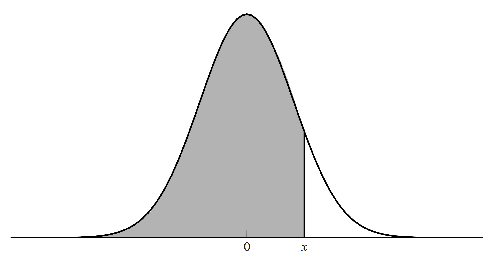
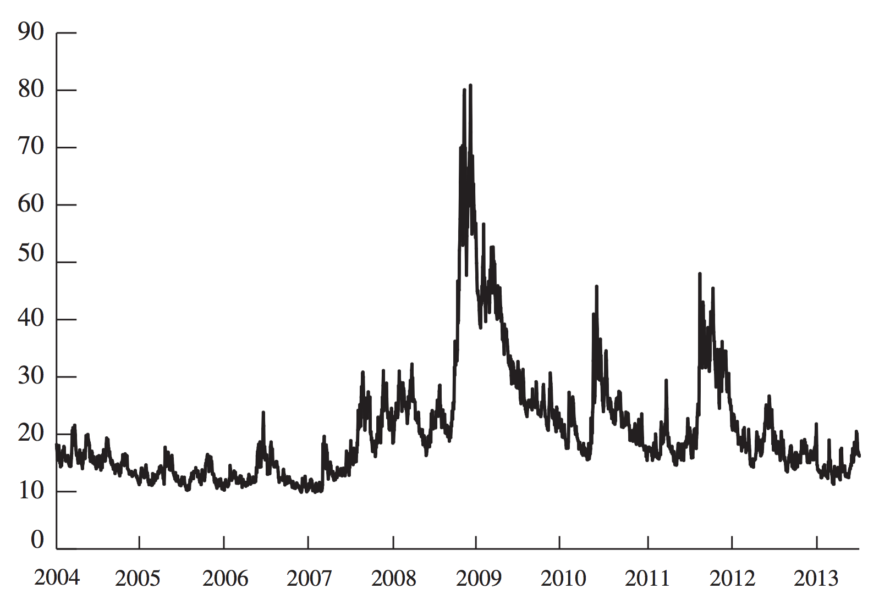

Black-Scholes-Merton Model
Overview
The Black-Scholes-Merton (BSM) model provides a simple formula for
computing the price of an option.
- It is derived in a fashion similar to the binomial option pricing
model.
- A riskless portfolio is obtained by buying \(\smash{\Delta}\)
shares of the underlying asset and shorting a single option.
- \(\smash{\Delta}\) represents \(\smash{\frac{\partial
C}{\partial S}}\), where \(\smash{S}\) is the price of the
underlying and \(\smash{C}\) is the price of the option.
- Unlike the binomial model, the BSM model \(\smash{\Delta}\) is
only valid for an infinitesimal length of time.
BSM Assumptions
The BSM model depends on the following assumptions.
- The price of the underlying asset follows geometric Brownian motion
with parameters \(\smash{\mu}\) and \(\smash{\sigma}\).
- There is no restriction on short selling.
- There are no transaction costs or taxes.
- All assets are perfectly divisible.
- The underlying doesn’t pay dividends.
- There are no riskless arbitrage opportunities.
- Asset trading occurs continuously.
- The risk-free rate, \(\smash{r}\) is constant and the same for
all maturities.
BSM and Ito’s Lemma
Suppose the price of an asset follows geometric Brownian motion:
\[\begin{align}
dS & = \mu S dt + \sigma S dZ.
\end{align}\]
According to Ito’s lemma, the price of a derivative,
\(\smash{f}\), follows:
\[\begin{align}
df & = \left(\frac{\partial f}{\partial S} \mu S + \frac{\partial
f}{\partial t} + \frac{1}{2} \frac{\partial^2 f}{\partial S^2}
\sigma^2 S^2 \right) dt + \frac{\partial f}{\partial S} \sigma S
dZ.
\end{align}\]
A Riskless Portfolio
Consider a portfolio that is short one unit of the derivative and long
\(\smash{\frac{\partial f}{\partial S}}\) units of the underlying:
\[\begin{split}\begin{align}
\Pi & = -f + \frac{\partial f}{\partial S} S \\
\Rightarrow d \Pi & = -df + \frac{\partial f}{\partial S} dS \\
& = \left(-\frac{\partial f}{\partial t} - \frac{1}{2}
\frac{\partial^2 f}{\partial S^2} \sigma^2 S^2\right) dt.
\end{align}\end{split}\]
Note that the portfolio is not affected by \(\smash{Z}\), so it is
riskless.
A Riskless Portfolio
- The portfolio must earn the risk-free rate of return over period
\(\smash{dt}\).
\[\begin{split}\begin{gather}
d \Pi = r \Pi dt \\
\Rightarrow \left(\frac{\partial f}{\partial t} + \frac{1}{2}
\frac{\partial^2 f}{\partial S^2} \sigma^2 S^2\right) dt =
r\left(f - \frac{\partial f}{\partial S} S\right) dt \\
\Rightarrow rf = \frac{\partial f}{\partial t} + \frac{\partial
f}{\partial S} rS + \frac{1}{2} \frac{\partial^2 f}{\partial S^2}
\sigma^2 S^2.
\end{gather}\end{split}\]
- This is the BSM differential equation.
Boundary Conditions
The BSM differential equation is true for any derivative that depends
on \(\smash{S}\).
- Boundary conditions determine the price of a particular derivative.
- For example, the boundary condition for a call option is its
terminal value: \(\smash{f = \max(S-X,0)}\).
- Likewise, the boundary condition for a put option is its
terminal value: \(\smash{f = \max(X-S,0)}\).
BSM Price of Forward
Suppose that some time ago a forward contract was entered into with
delivery price \(\smash{K}\) and maturity \(\smash{T}\).
- Recall that at intermediate date \(\smash{t}\) the value of the
forward is \(\smash{f = S - K e^{-r(T-t)}}\).
\[\begin{align}
\frac{\partial f}{\partial t} = -r K e^{-r(T-t)} \,\,\,\,
\frac{\partial f}{\partial S} = 1 \,\,\,\, \frac{\partial^2
f}{\partial S^2} = 0.
\end{align}\]
- Substituting these into the BSM equation, \(\smash{rf = rS - rK
e^{-r(T-t)}}\), which is true.
Risk-Neutral Valuation
A basic principle of asset pricing is that investors demand higher
expected return, \(\smash{\mu}\), in the presence of higher
volatility, \(\smash{\sigma}\).
- Note that \(\smash{\mu}\) doesn’t appear in the BSM differential
equation.
- This means we can treat investors as if they are risk neutral.
- That is, we can value assets under the assumption that investors
only demand expected return \(\smash{r}\), even though they
aren’t really risk neutral.
- The practical implication is that once we compute future asset
payoffs, we can discount them at the risk-free rate (implicitly
assuming this is the rate of return that investors demand).
BSM Option Pricing Formulas
The BSM option pricing formulas are:
\[\begin{split}\begin{align}
C & = S_0 \Phi(d_1) - X e^{-rT} \Phi(d_2) \\
P & = X e^{-rT} \Phi(-d_2) - S_0 \Phi(-d_1)\\
d_1 & = \frac{\log(S_0/X) + (r+\sigma^2/2)T}{\sigma \sqrt{T}} \\
d_2 & = \frac{\log(S_0/X) + (r-\sigma^2/2)T}{\sigma \sqrt{T}} = d_1
- \sigma \sqrt{T}.
\end{align}\end{split}\]
- These satisfy the BSM differential equation.
- \(\smash{\Phi(x)}\) represents the standard Normal CDF:
\(\smash{P(X \leq x)}\) when \(\smash{X \sim N(0,1)}\).
- \(\smash{C}\) and \(\smash{P}\) are the prices of European
call and put options on the underlying, \(\smash{S}\).
Normal CDF

Interpretation
\[\begin{split}\begin{align}
P(S_T \geq X) & = P\left(\log(S_T) \geq \log(X)\right) \\
& = P\left(\frac{\log(S_T) -
E\left[\log(S_T)\right]}{Sd\left(\log(S_T)\right)} \geq
\frac{\log(X) -
E\left[\log(S_T)\right]}{Sd\left(\log(S_T)\right)}\right) \\
& = 1 - \Phi\left(\frac{\log(X) -
E\left[\log(S_T)\right]}{Sd\left(\log(S_T)\right)}\right) \\
& = \Phi\left(-\frac{\log(X) -
E\left[\log(S_T)\right]}{Sd\left(\log(S_T)\right)}\right) \\
& = \Phi(d_2).
\end{align}\end{split}\]
Interpretation
The last equation above follows because, under risk-neutrality
\(\smash{E\left[\log(S_T)\right] = \log(S_0) + (r - \sigma^2/2)T}\) and
\(\smash{Sd\left(\log(S_T)\right) = \sigma \sqrt{T}}\):
\[\begin{split}\begin{align}
-\frac{\log(X) - E\left[\log(S_T)\right]}{Sd\left(\log(S_T)\right)}
& = \frac{\log(S_0) + (r - \sigma^2/2)T - \log(X)}{\sigma
\sqrt{T}} \\
& = \frac{\log(S_0/X) + (r - \sigma^2/2)T}{\sigma \sqrt{T}} \\
& = d_2.
\end{align}\end{split}\]
Interpretation
\(\smash{\Phi(d_1)}\) is similar to \(\smash{\Phi(d_2)}\), but
slightly harder to interpret.
- \(\smash{S_0\Phi(d_1) e^{rT}}\) is the expected asset price
(under risk neutrality), conditional on the asset expiring with
\(\smash{S_T \geq X}\).
- The expected payoff of the call option is:
\[\begin{align}
S_0 \Phi(d_1) e^{rT} - X \Phi(d_2).
\end{align}\]
- The present value of the call option expected payoff is:
\[\begin{align}
S_0 \Phi(d_1) - X e^{-rT} \Phi(d_2).
\end{align}\]
Extreme Cases
Suppose the current stock price \(\smash{S_0}\) is very large
relative to the strike \(\smash{X}\).
- In this case \(\smash{d_1}\) and \(\smash{d_2}\) are very
large.
- As a result \(\smash{\Phi(d_1)}\) and \(\smash{\Phi(d_2)}\)
approach 1.
- This causes the call option value to be \(\smash{S_0 - X
e^{-rT}}\).
- This is identical to a forward contract, which makes sense for a
deep-in-the-money call.
- Likewise \(\smash{\Phi(-d_1)}\) and \(\smash{\Phi(-d_2)}\)
approach 0.
- This causes the put option value to be 0.
Extreme Cases
Suppose \(\smash{\sigma \to 0}\).
- If \(\smash{S_0 > X e^{-rT}}\), then \(\smash{d_1 \to
\infty}\) and \(\smash{d_2 \to \infty}\), causing
\(\smash{\Phi(d_1) \to 1}\) and \(\smash{\Phi(d_2) \to 1}\).
- The result is a value of \(\smash{S_0 - X e^{-rT} > 0}\), which
is identical to the riskless payoff \(\smash{\max(S_0 e^{rT} -
X,0)}\).
- Likewise, if \(\smash{S_0 < X e^{-rT}}\), then \(\smash{d_1
\to -\infty}\) and \(\smash{d_2 \to -\infty}\), causing
\(\smash{\Phi(d_1) \to 0}\) and \(\smash{\Phi(d_2) \to 0}\).
- The result is a value of \(\smash{0}\), which is identical to
the riskless payoff \(\smash{\max(S_0 e^{rT} - X,0)}\).
Implied Volatility
Volatility, \(\smash{\sigma}\), is the single parameter of the BSM
model that is not directly observed.
- Typically, the BSM equation is not used to compute an option price,
but to compute an implied volatility, given an option price.
- For example, if \(\smash{C = 1.875}\), \(\smash{S_0 = 21}\),
\(\smash{X = 20}\), \(\smash{r = 0.1}\) and \(\smash{T
= 0.25}\), what is the value that \(\smash{\sigma}\) must take
for the BSM equation to hold for a European call option?
VIX Index
The VIX index is an index of implied volatilities for 30-day S&P 500
options (calls and puts).
- It is interpreted as the (annualized) one standard deviation move
(in percentage) of the S&P 500 index over the next 30 days.
- Options and futures trade on the VIX itself (as well as the S&P
500).
Historical VIX
